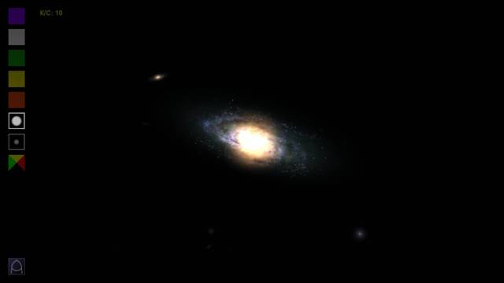
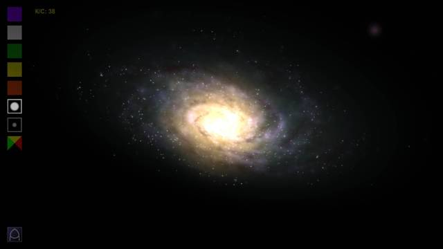
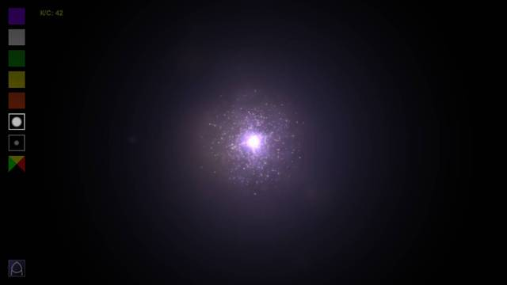
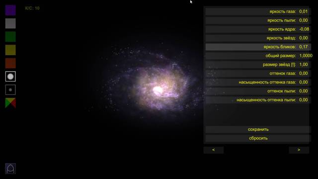
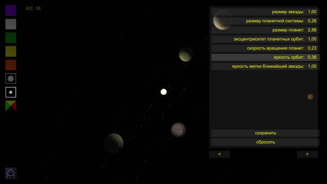
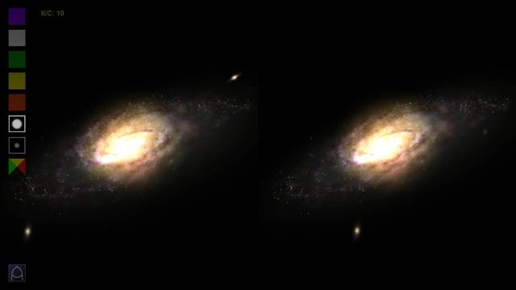
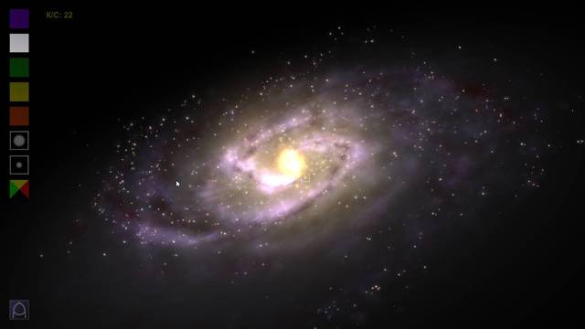
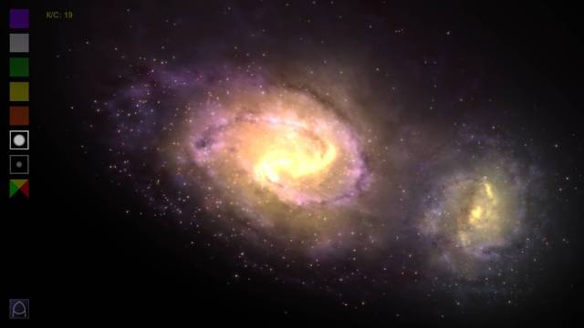
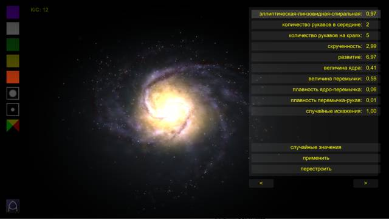
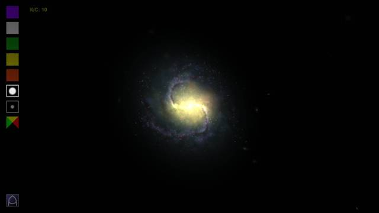

|
'МИР А' - новая версия параметрического генератора галактик.
версия для Windows
MirA.zip (26 мб) (zip-архив, инсталляция не требуется)
версия для Android
MirA.apk (22 мб) (47 мб в памяти телефона)
Описание параметрической модели спиральных галактик в формате
doc или
pdf
Графики к описанию в формате Graph
Здесь Вы можете скачать описание программы.
Пожелания, замечания, вопросы - по почте, на адрес mir4kks@yandex.ru или в гостевой книге
|
|
новости сайта
28.12.24
Новая версия МирА 5.7 для Android и Windows.
Изменено отображение звёзд.
Добавлено "население II". (В спиральных галактиках - звёзды в объёме гало и шаровые скопления. В эллиптических галактиках внесены исправления по цвету.)
Добавлен режим экскурсии. По умолчанию программа запускается в режиме самостоятельного перемещения между галактиками/звездами/планетами.
16.02.24
Новая версия МирА 5.6 для Android и Windows.
Добавлен анаглифный режим стереоизображения. Цветоделение по 4 алгоритмам - обычное, серое с усилением объёма, оптимальное и с усилением цветопередачи.
Переделана оптимизация - программа, насколько возможно обсчитывает только то, что отображается.
Дополнены и расширены до шести панелей настройки программы.
22.12.23
Доступна новая версия МирА 5.5 для Android и Windows.
Добавлены настройки по выбранной планете - размер, скорости вращения вокруг оси и вокруг звезды, наклон оси, наклон, эксцентриситет и радиус орбиты, карта поверхности, цвет, видимость колец.
Добавлены тени от колец на планете, добавлена анимация колец и звёздной атмосферы.
Планеты меняют уровень детализации - сохраняют круглую форму при любом приближении.
Устранены рывки при приближении к планете.
18.04.23
Доступна новая версия МирА 5.4 для Android и Windows.
Добавлены кольца у планет-гигантов.
Устранены фризы при создании новых галактик (рывки при больших перемещениях).
Добавлен слой с узором осевых линий галактики.
Добавлено отслеживание планет.
Изменено отображение орбит.
Исправлено неравномерное распределение вещества по рукавам.
Исправлены ошибки во вращении планет (оси и угловые скорости).
25.01.23
Доступна новая версия МирА 5.3 для Android и Windows. Исправлены некоторые ошибки.
10.12.22
Доступна новая версия МирА 5.2 для Android и Windows. Добавлена настройка по температуре/цвету ближайшей звезды. Исправлены некоторые ошибки во вращении планет.
11.11.22
Доступна новая версия МирА 5.1 для Android и Windows. Программа полностью переписана на Unity. Добавлено множество новых возможностей, изменён внешний вид.
26.10.19
В новой версии 2А.1 применена новая параметрическая модель - существенно изменён внешний вид галактик. Сборка для скринсейвера временно недоступна.
28.04.19
Добавлено описание параметрической модели
doc или
pdf
30.12.08
В новой версии 1.7.2 появилась пыль в спиральных галактиках. Цвет галактического центра - желтоватый.
19.11.08
В новой версии 1.7.1 появились блики от обычных звёзд. Добавлена соответствующая настройка: вид 'бликов на линзах' - нет бликов / только галактики / галактики и звёзды-гиганты / галактики, звёзды-гиганты и звёзды. Вид бликов можно переключать как и прежде - по кнопке F12. У программы появился новый инсталлятор с выборочной установкой.
06.11.08
В версии 1.6.3 появилось управление мышью. Добавлена настройка анаглифной стереопары (красно-голубая, оранжево-жёлтая и др.). Появился новый вид движения для скринсейвера - перелёт от галактики к галактике. Добавился выбор движения для скринсейвера - обычное, "луч", "перелёты", "просмотр ближайшей", а также случайный выбор движения и переключение вида движения время от времени.
24.10.08
В версии 1.5.1 появилось анаглифное стереоизображение (нужны красно-голубые очки как в кинотеатре). Включение/выключение - по Ctrl+ScrollLock, настройка - ScrollLock+лево/право.
15.10.08
В версии 1.4.3 появились настройки яркости и размеров бликов. Метка середины орбиты - на кнопке F11.
11.10.08
В версии 1.4.2 галактики расположены друг за другом, а не собраны в скопления.
03.10.08
В версии 1.3.2 включен эффект бликов на линзах. Включение/выключение - кнопкой F12
29.09.08
В версии 1.2.13 добавлен поиск ближайшей галактики для режима с поворотом вида. В скринсейвере этот режим включён по умолчанию
|